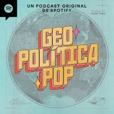
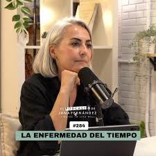
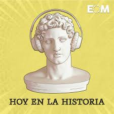
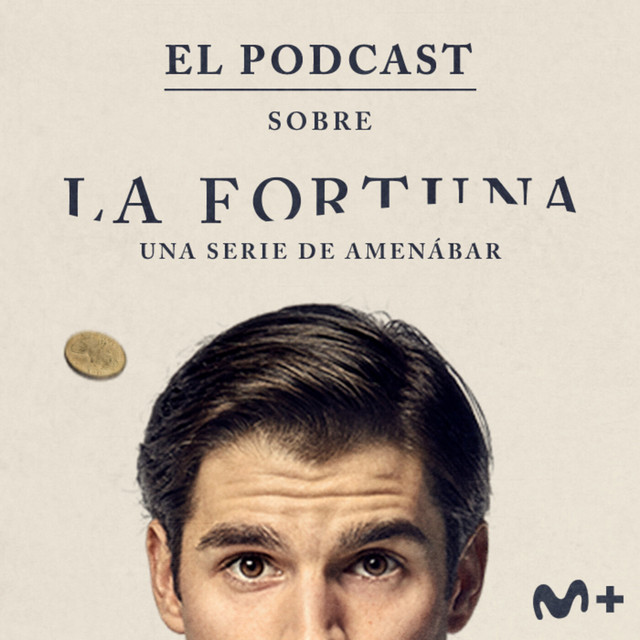
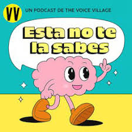
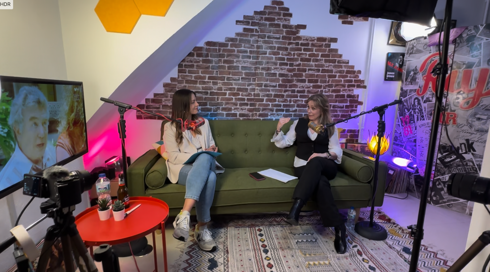
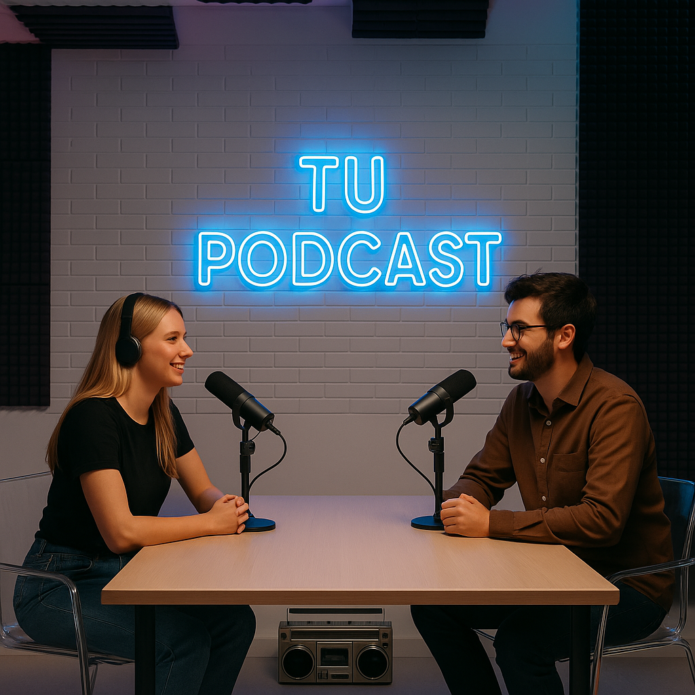
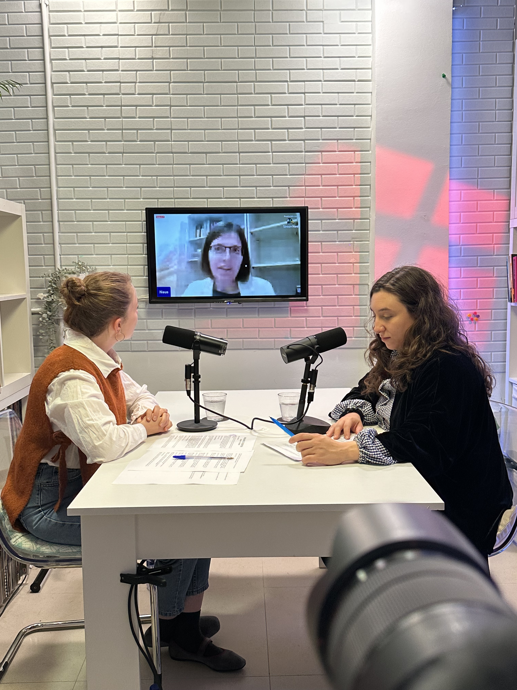
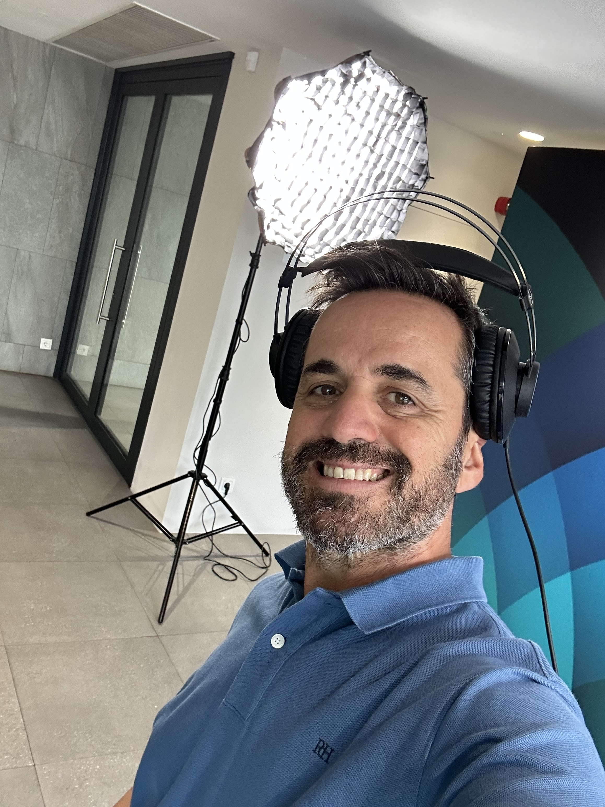

Vocolia
Automatización y procesamiento de audio para flujos de publicación más rápidos.
📍 by Local Reset Studios
Impartido por Jonathan Castilla
Aprende cómo crear un podcast, programa de radio o videopodcast desde cero y llévatelo grabado en un estudio profesional en Madrid, con el método para seguir publicando desde casa.
No vienes solo a aprender a hacer un podcast. Vienes a salir con uno: idea, guion, grabación, cámaras, sonido, iluminación, edición y publicación en un , con acceso a material exclusivo. Está dirigido a profesionales, emprendedores, marcas, locutores, radios y profesionales del audio que quieren presentar su propuesta con más claridad y calidad. Formaciones disponibles en septiembre, octubre y noviembre.
Hablar por WhatsAppSi vienes del mundo de la radio, este curso está pensado también para ti. Aprenderás a adaptar tu experiencia al nuevo entorno: vídeo, redes sociales y herramientas de inteligencia artificial que ya están transformando el sector.
Si quieres iniciar un podcast, no necesitas llegar con experiencia ni con equipo. Durante dos jornadas conviertes una idea en un formato grabable, preparas el guion, entiendes el equipo de podcast y videopodcast, practicas ante cámara y micrófono y grabas en un estudio profesional.
El objetivo no es que memorices teoría: es que publiques con criterio y sepas repetir el proceso desde casa, en tu empresa o con tu equipo.
Quiero crear mi podcastBienvenida
Herramientas IA aplicadas
Veremos flujos prácticos para creación y clonación de voz con ElevenLabs, generación musical con Suno, asistentes con ChatGPT y automatizaciones de audio con Vocolia para acelerar tu proceso de podcast, radio y videopodcast.
Automatización y procesamiento de audio para flujos de publicación más rápidos.
Creación y clonación de voces para demos, piezas narradas y prototipos.
Ideas, escaletas, títulos, copies y apoyo editorial para cada episodio.
Proyecto
Estudio, formación y producción audiovisual aplicada a podcast, radio y videopodcast.
Visitar localreset.com ↗Directo tipo YouTube
Las personas registradas podrán seguir toda la jornada en directo con realización de 3 cámaras desde cualquier parte del mundo.
Si no eres de Madrid, no te preocupes: este curso también está disponible para grupos online o en formato presencial. Nos desplazamos a tu ciudad.





◉
✦
◌
◎
Adaptación de programas de radio a videopodcast.
▣
◍
Flujos rápidos para radios locales, creadores de contenido, locutores y profesionales del audio.
◐
Aplicado a radio, cuñas y producción diaria.
▦
Está pensada para profesionales, emprendedores, marcas, locutores, radios y profesionales del audio que quieren llevar su propuesta a otro nivel con contenido audiovisual.
Trabajaremos mejoras creativas y también la parte de presencia en cámara, para crear piezas con impacto: videopodcast, vídeos cortos para redes como TikTok e Instagram, y formatos que comuniquen mejor tu propuesta.
La radio está cambiando. Hoy no basta con sonar bien: hay que verse, compartirse y adaptarse al entorno digital. En este curso aprenderás cómo llevar una radio o programa al siguiente nivel.
La formación se desarrolla dentro de Local Reset Studios, con un flujo real de producción y grabación.




Soy diseñador sonoro, locutor, realizador y productor con más de 20 años de experiencia en radio, podcast y producción audiovisual.
He trabajado en emisoras y proyectos como 40 Principales, Los 40, Radio Barcelona, Máxima FM, RNE, Europa FM, Cadena Dial y Radiolé, además de productoras y formatos de directo.
Importante: esta formación también está pensada para quienes vienen con experiencia heredada de la radio y quieren trasladar esa base al videopodcast: voz, ritmo, guion y realización adaptados al lenguaje audiovisual.
En esta formación te comparto una metodología práctica para que entiendas el proceso completo: idea, guion, preparación técnica, grabación, realización y publicación de tu videopodcast.
Hoy dirijo Local Reset Studios y aplico toda esta trayectoria para ayudarte a lanzar un proyecto con criterio profesional desde el primer episodio.
Empieza por definir a quién hablas, el formato y el objetivo de cada episodio. Después prepara una escaleta, graba con una voz clara, edita y publica. Aquí recorres el proceso completo y grabas un primer episodio real.
Una idea concreta, una estructura, un micrófono adecuado, auriculares, un lugar silencioso y un sistema sencillo de grabación y edición. Aprenderás qué equipo compensa para tu caso y cómo continuar desde casa.
Audio prioritario, cámaras o una cámara bien situada, iluminación, trípode, cableado y un flujo de edición. Practicarás todo esto en el estudio antes de decidir qué equipo comprar.
Cuida primero la sala, la distancia al micrófono y los niveles de voz. Después aplica edición y diseño sonoro con criterio. La práctica en estudio te permite escuchar la diferencia y repetir el proceso con seguridad.
El estudio aporta control de sonido, iluminación y acompañamiento técnico; casa aporta agilidad. Aprenderás el estándar en estudio y cómo adaptarlo a un equipo realista para tu espacio.
Depende del nivel de producción. Puedes iniciar un podcast con un equipo sencillo si priorizas el audio; lo importante es saber qué comprar y qué evitar. La formación cuesta 490 € e incluye estudio, práctica y episodio piloto.
Podemos adaptar esta formación a tu radio o equipo de trabajo. Formación práctica, aplicada a vuestro día a día.
Hablar por WhatsAppBonus incluido
La grabación del episodio piloto no se realiza durante el fin de semana de formación. Cada alumno podrá reservar su sesión en una fecha posterior, dentro de las semanas siguientes al curso y según disponibilidad del estudio.
La sesión tiene una duración máxima de 1 hora y puede realizarse en solitario o con un invitado. Se llevará a cabo en formato de autorrealización, sin edición posterior, utilizando el set y el equipamiento del estudio (3 cámaras 4K, mesa o sofá).
El objetivo es facilitar la grabación de tu primer episodio piloto de videopodcast.
La fecha debe reservarse previamente con el estudio.
Hablar por WhatsAppEstudio real